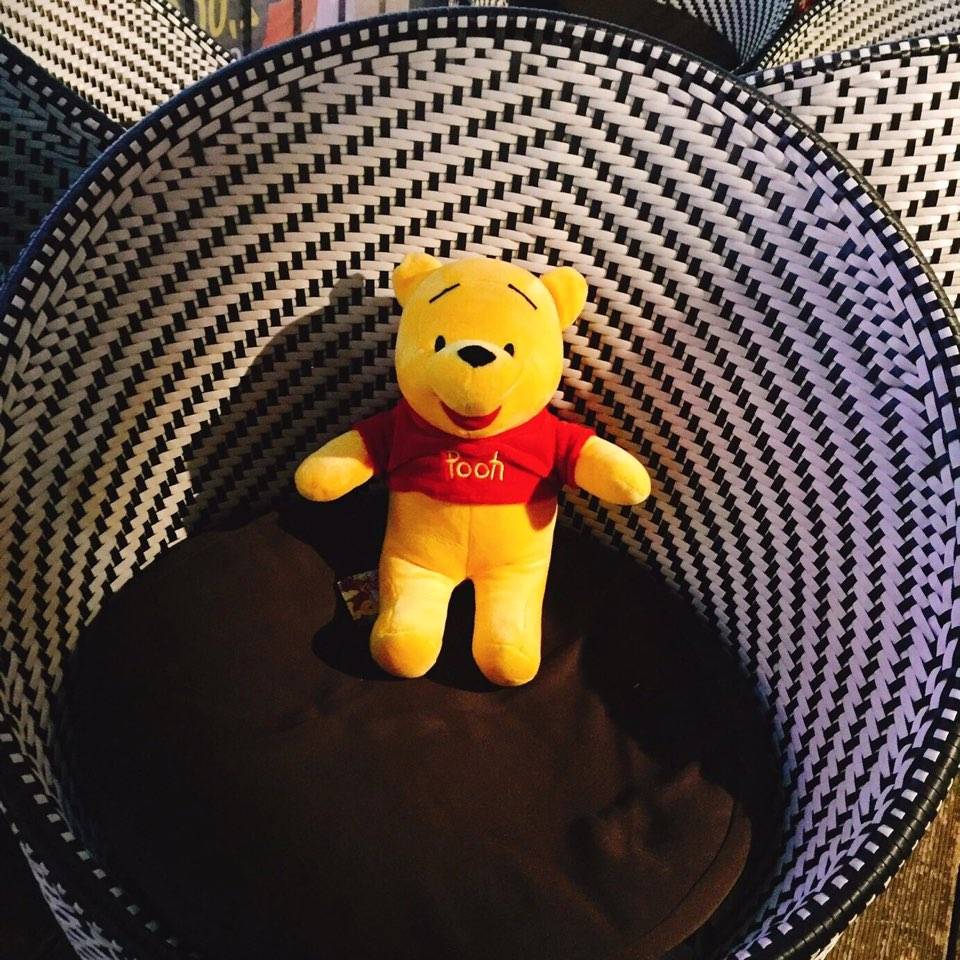
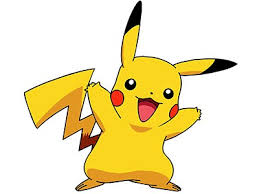
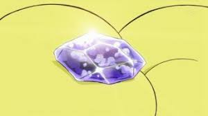
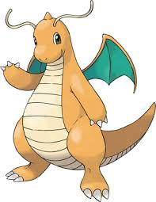

<!-- Page Container -->
<div class="w3-container w3-content" style="max-width:1400px;margin-top:80px">
  <!-- The Grid -->
  <div class="w3-row">
    <!-- Middle Column -->
    <div class="w3-col m7">

      <div class="w3-row-padding">
        <div class="w3-col m12">
          <div class="w3-card-2 w3-round w3-white">
            <div class="w3-container w3-padding">
              <h6 class="w3-opacity">나의 일상 또는 생각을 지금 바로 공유 해주세요~</h6>
              <!-- <input type="text" contenteditable="true" class="w3-border w3-padding" placeholder="여기에 적어주세요!"><p></p> -->
              <p contenteditable="true" class="w3-border w3-padding">여기에 적어주세요!</p>
              <button type="button" class="w3-button w3-theme"><i class="fa fa-pencil"></i>  등록</button>
            </div>
          </div>
        </div>
      </div>

      <div class="w3-container w3-card-2 w3-white w3-round w3-margin"><br>
        
        <span class="w3-right w3-opacity">1 min</span>
        <h4>Mr.poo</h4><br>
        <hr class="w3-clear">
        <p>피카츄랑 꼬부기랑 술 한잔 했다. 꼬부기 이놈 물 속성이라 그런지 취하지도 않네...ㅡ.ㅡ 다음에는 파이리도 불러야지!</p>
        <div class="w3-row-padding" style="margin:0 -16px">
          <div class="w3-half">
            
          </div>
          <div class="w3-half">
            
          </div>
        </div>
        <button type="button" class="w3-button w3-theme-d1 w3-margin-bottom"><i class="fa fa-thumbs-up"></i>  좋아요!</button>
        <button type="button" class="w3-button w3-theme-d2 w3-margin-bottom"><i class="fa fa-comment"></i>  댓글</button>
      </div>

      <div class="w3-container w3-card-2 w3-white w3-round w3-margin"><br>
        
        <span class="w3-right w3-opacity">16 min</span>
        <h4>Mr. P ca chu</h4><br>
        <hr class="w3-clear">
        <p>진화의 돌 찾아야 되는데 어디가서 찾냐! 지우 이 놈은 집 나간지 오래되서 같이 찾으러갈 사람이 없네 ㅠㅠ 라이츄 되고 싶다...이거 333! 갖고 있는 사람 댓글 남겨주셈</p>
        <div class="w3-row-padding" style="margin:0 -16px">
          <div class="w3-half">
            
          </div>
        </div>
        <button type="button" class="w3-button w3-theme-d1 w3-margin-bottom"><i class="fa fa-thumbs-up"></i>  좋아요!</button>
        <button type="button" class="w3-button w3-theme-d2 w3-margin-bottom"><i class="fa fa-comment"></i>  댓글</button>
      </div>

      <div class="w3-container w3-card-2 w3-white w3-round w3-margin"><br>
        
        <span class="w3-right w3-opacity">32 min</span>
        <h4>Mr. Mo rae doo zy</h4><br>
        <hr class="w3-clear">
        <p>목격자를 찾습니다!</p>
        
        <p>저희 사촌형 망나뇽이라고 하는데 어제 연락이 두절됬어요ㅜㅜ 누구한테 잡힌건지...혹시 보신 분은 댓글 남겨주세요!</p>
        <button type="button" class="w3-button w3-theme-d1 w3-margin-bottom"><i class="fa fa-thumbs-up"></i>  좋아요!</button>
        <button type="button" class="w3-button w3-theme-d2 w3-margin-bottom"><i class="fa fa-comment"></i>  댓글</button>
      </div>
      <router-outlet></router-outlet>
      <!-- End Middle Column -->
    </div>
  </div>
</div>
